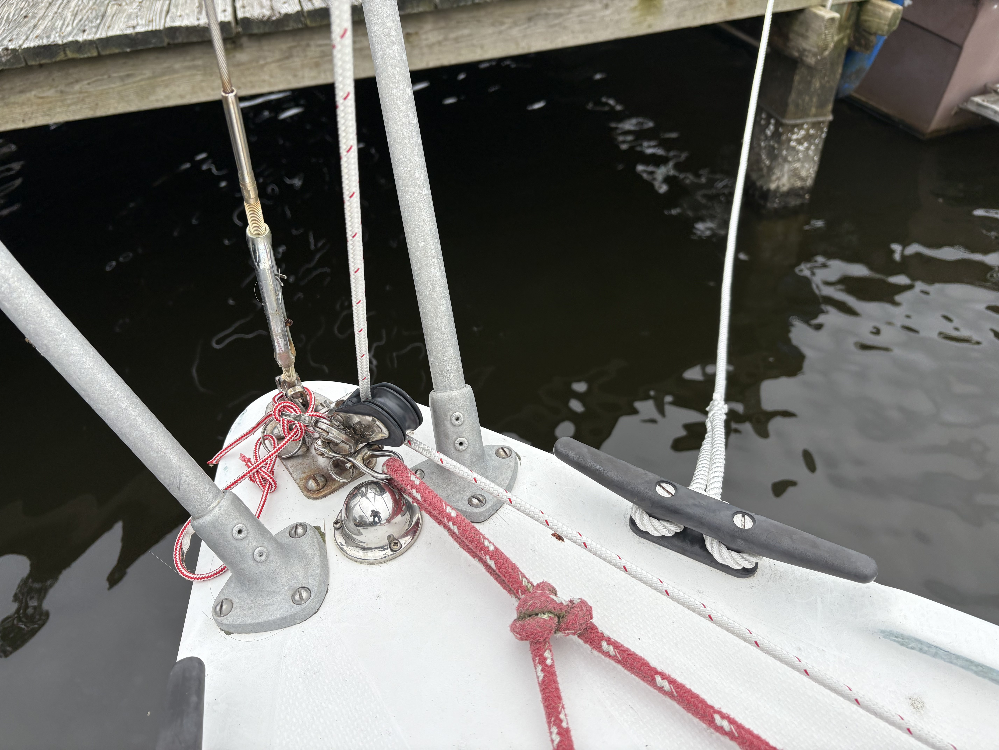

Introduction
Rigging is everything on a sailboat. It factors into the performance of the boat as well as conformability. In my discussions with the previous owner, I was pleased to learn that the standing rigging had been replaced recently along with a few pieces of running rigging such as the mainsheet and halyards. Despite this, there was still much to address in regard to rigging.
Headsail Downhaul/Spinnaker Tack-Line
Inspired by The Stingy Sailor, my first addition to the rigging of this boat was a double-duty headsail downhaul (white line with red tracer below).
Outline
The purpose of this line is to allow a jib/genoa to be pulled down from the cockpit. This is helpful in a couple of ways:
- Easier singlehand sailing
- Crew does not have to go forward to reduce sail (especially handy in heavy conditions)
In addition to these benefits as a downhaul, the system can work as an adjustable tack-line for a spinnaker sail.
Function
The downhaul is run through a turning block shackled to the stem fitting and the lead aft to the cockpit through fairleads, where it terminates in a jam cleat.
To douse a sail with the downhaul...
- Turn the bow into the wind
- Release the headsail halyard
- Keeping slight tension on the halyard, pull the downhaul through the cleat
- When conditions allow, contain/stow the headsail
To hoist a sail with the downhaul...
- Turn the bow into the wind
- Coil the downhaul such that it can feed through its cleat
- Uncleat the downhaul
- Hoist the headsail with the halyard as usual
- Take most of the slack out of downhaul; do not pull tight
Future Improvements
After using this system many times, there are a few improvements to be made:
- Relocate turning block to reduce clutter and allow for Catalina Direct Anchor Roller
- Replace jam cleat with a cam cleat to make hosting easier
- Add a fairlead to reduce gelcoat wear at a specific point
Other Rigging Upgrades
There are other rigging upgrades in progress. Check back later to see the results! In the meantime, updates will be posted on my blog.